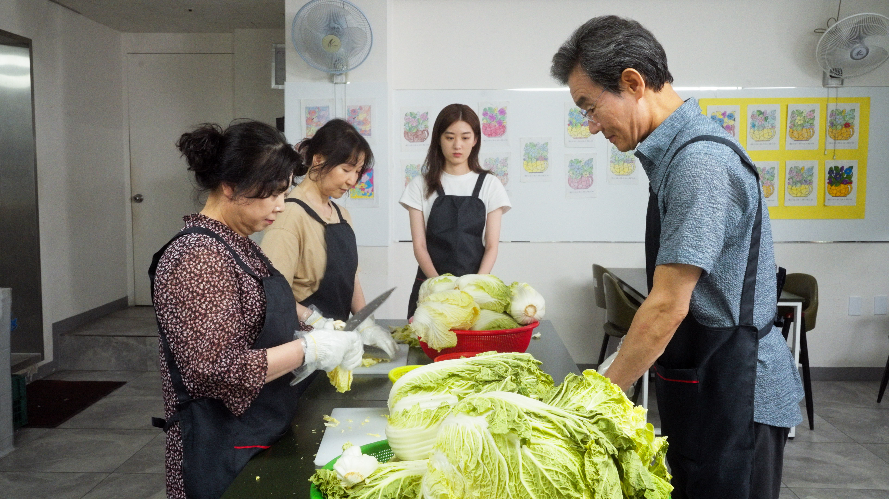
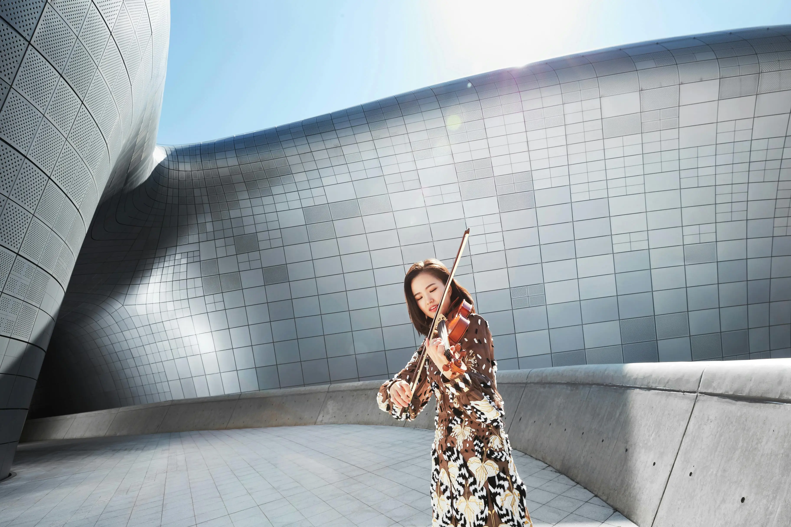

Film & Media
SBS Productions
7개 프로그램 · 50+ 에피소드 서브촬영

문명특급 (MMTG)
대중문화 트렌드를 재미있게 파헤치는 SBS 디지털 예능

가갸거겨고교
전국 대학 캠퍼스를 탐방하는 캠퍼스 투어 콘텐츠

서울리스
서울을 벗어나 전국 각 지역을 소개하는 콘텐츠

스브스뉴스 (SUBUSU NEWS)
MZ세대를 위한 SBS 디지털 뉴스 콘텐츠

오목교 전자상가 (OMG)
IT·테크 제품을 리뷰하고 소개하는 테크 콘텐츠

재수서바이벌
재수생들의 도전과 성장을 담은 리얼 다큐 콘텐츠
Filmography


갑자기 분위기 스파시바
조명부 / 타이틀 디자인
KOFIC 독립예술영화 제작지원 선정
Berlin Lift-Off — Jury's Choice
Indie Film Fest — Final Awards Nominee
NY Film & Female — Finalist
IMDb


외 30편 이상 단편영화·광고·배리어프리 제작 참여